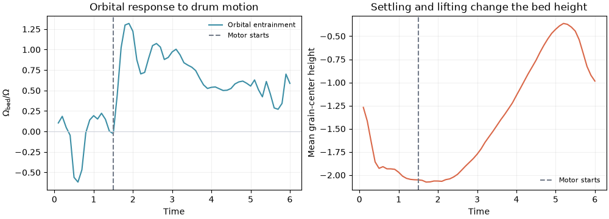
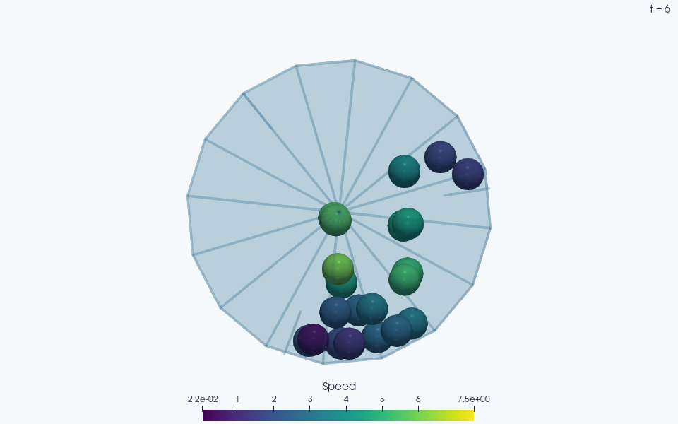

Note
Go to the end to download the full example code.
A rotating drum loaded from an STL mesh#
Load a triangulated drum, add frictional grains, and turn its internal lifters. The bundled STL describes a thin three-dimensional cylinder with end caps and three radial lifters. The default follows 24 spheres through settling and a short rotation; it demonstrates mechanical entrainment rather than measuring a converged dynamic angle of repose or a bulk mixing coefficient.
The motor prescribes the rigid mesh motion. Grain–grain contacts have Cundall–Strack friction and damping, while grain–facet contacts use normal elastic springs. The lifters are important: their normals push grains along the direction of rotation even though the facet law has no tangential friction. A perfectly smooth circular frictionless wall would supply no such driving torque. All parameters use consistent reduced length, mass and time units; each grain has unit mass and solid-sphere rotational inertia.
This example requires Matplotlib and the optional JaxDEM[io] dependencies
for VTK’s STL reader. Set JAXDEM_DRUM_STL=/path/to/drum.stl to try another
triangulated drum with comparable dimensions, centered at the origin and
rotating about z.
import jax.numpy as jnp
from dataclasses import replace
import os
from pathlib import Path
import matplotlib.pyplot as plt
import numpy as np
from vtkmodules.util.numpy_support import vtk_to_numpy
from vtkmodules.vtkIOGeometry import vtkSTLReader
import jaxdem as jdem
from jaxdem.utils.quaternion import Quaternion
Read real triangles from STL#
vtkSTLReader
accepts ASCII and binary STL. STL stores geometry rather
than a unit system or contact material: check dimensions and placement when
substituting your own file. The supplied asset has radius 3 and end caps at
z = +/-0.7. State.add_mesh turns each triangle into a contact facet and,
with rigid=True, places all facets in a single rigid body. filled=False
treats the asset as a boundary shell, including the internal lifters.
def load_stl(path):
"""Read a nonempty ASCII or binary STL as vertices and triangle indices."""
path = Path(path)
if not path.is_file():
raise FileNotFoundError(f"Drum STL does not exist: {path}")
reader = vtkSTLReader()
reader.SetFileName(str(path))
reader.Update()
mesh = reader.GetOutput()
if mesh.GetNumberOfPoints() == 0 or mesh.GetNumberOfCells() == 0:
raise ValueError(f"STL contains no usable triangles: {path}")
vertices = vtk_to_numpy(mesh.GetPoints().GetData()).copy()
faces = vtk_to_numpy(mesh.GetPolys().GetConnectivityArray()).reshape(-1, 3).copy()
if not np.isfinite(vertices).all():
raise ValueError(f"STL has nonfinite coordinates: {path}")
return vertices, faces
# Scripts locate assets next to their source; gallery and notebook execution
# uses the working directory, where the accompanying data folder belongs.
example_dir = Path(__file__).resolve().parent if "__file__" in globals() else Path.cwd()
mesh_path = Path(
os.environ.get(
"JAXDEM_DRUM_STL",
example_dir / "data" / "rotating_drum.stl",
)
)
vertices, faces = load_stl(mesh_path)
Contact mechanics and motor loading#
Grain contacts obey a non-tensile normal spring/dashpot and a Coulomb-limited tangential history spring:
The law transports \(\boldsymbol\xi_t\) with the normal and resets it when contact is lost. Tangential forces generate grain spin. At a facet, the separate law uses \(F_n=k_w\max(\delta,0)\) and \(\mathbf F_t=0\). Its force acts at the closest point on the triangle; the radial lifters give that force a moment about the drum axis. Dashpots, grain sliding and rolling resistance dissipate energy, while the motor supplies work. Grain energy therefore is not conserved during rotation.
For drum radius \(R\) and angular speed \(\Omega\), \(\mathrm{Fr}=\Omega^2R/g\) compares rotation with gravity. Let the bed settle until \(t_s\), then prescribe \(\theta(t)=\Omega\max(t-t_s,0)\). The motor turns on abruptly, so its startup transient is included. The mesh’s orientation is \(q(t)=q_z(\theta(t))q_0\) and its angular velocity is \(\Omega\mathbf e_z\) after startup.
drum_radius = 3.0
grain_radius = 0.32
n_grains = 24
gravity = 9.81
omega = 0.5
settle_time = 1.5
dt = 0.004
# Two shallow layers of nonoverlapping spheres start below the drum center.
candidates = []
for row in range(4):
y = -1.80 + row * 0.58
for x in np.arange(-1.98, 1.99, 0.66) + (row % 2) * 0.33:
point = np.array([x, y])
clear_of_lifters = True
for angle in np.arange(3) * (2.0 * np.pi / 3.0):
direction = np.array([np.cos(angle), np.sin(angle)])
closest = direction * np.clip(point @ direction, 2.1, 3.0)
clear_of_lifters &= np.linalg.norm(point - closest) > grain_radius + 0.09
if np.hypot(x, y) < 2.45 and clear_of_lifters:
candidates.append((x, y))
base = np.asarray(candidates[: n_grains // 2])
grain_initial = np.concatenate(
[
np.column_stack([base + np.array([shift, 0.0]), np.full(len(base), z)])
for z, shift in [(-0.33, -0.04), (0.33, 0.04)]
]
)
state = jdem.State.create(
pos=jnp.asarray(grain_initial),
rad=jnp.full(n_grains, grain_radius),
mass=jnp.ones(n_grains),
inertia=jnp.full((n_grains, 3), 0.4 * grain_radius**2),
)
state = jdem.State.add_mesh(
state,
vertices,
faces,
thickness=0.025,
mass=30.0,
rigid=True,
filled=False,
fixed=True,
species_id=1,
)
initial_q = state.q
wall_com = state.pos_c[n_grains:].copy()
def prescribe_drum(state, system):
"""Prescribe rigid rotation about the world z axis."""
speed = jnp.where(system.time > settle_time, omega, 0.0)
end_angle = omega * jnp.maximum(system.time - settle_time, 0.0)
# The angular integrator advances the fixed body's prescribed spin by
# dt*speed before force evaluation. Supply the starting q so the ensuing
# end orientation equals the desired exact rotation.
start_rotation = Quaternion.from_rotvec(
jnp.array([0.0, 0.0, end_angle - system.dt * speed])
)
target_q = start_rotation @ initial_q
end_rotation = Quaternion.from_rotvec(jnp.array([0.0, 0.0, end_angle]))
target_com = Quaternion.rotate(end_rotation, wall_com)
center_velocity = jnp.cross(jnp.array([0.0, 0.0, speed]), target_com)
q = Quaternion(
state.q.w.at[n_grains:].set(target_q.w[n_grains:]),
state.q.xyz.at[n_grains:].set(target_q.xyz[n_grains:]),
)
return (
replace(
state,
q=q,
# A substituted mesh can have its mass COM away from the rotation
# axis. Prescribe that COM's circular path too. Verlet then drifts
# these fixed particles by their prescribed center velocity.
pos_c=state.pos_c.at[n_grains:].set(
target_com - system.dt * center_velocity
),
vel=state.vel.at[n_grains:].set(center_velocity),
ang_vel=state.ang_vel.at[n_grains:].set(jnp.array([0.0, 0.0, speed])),
),
system,
)
material = jdem.Material.create(
"elasticfrict",
young=4_000.0,
poisson=0.3,
density=1.0 / (4.0 * np.pi * grain_radius**3 / 3.0),
mu=0.6,
e=0.45,
mu_r=0.05,
)
router = jdem.ForceRouter.from_dict(
S=2,
mapping={
(0, 0): jdem.ForceModel.create("cundallstrack"),
(0, 1): jdem.ForceModel.create("sphere_facet_spring"),
},
)
system = jdem.System.create(
state=state,
dt=dt,
force_model=router,
collider_type="NeighborList",
collider_kw={
"cutoff": 2.0 * drum_radius,
"skin": 0.2,
"max_neighbors": 32,
"secondary_collider_type": "naive",
},
force_manager_kw={"gravity": jnp.array([0.0, -gravity, 0.0])},
mat_table=jdem.MaterialTable.from_materials([material]),
user_pre_step_actions=prescribe_drum,
)
state, system = system.initialize(state, system)
Observe angular entrainment and check the prescribed motion#
The least-squares orbital rotation rate of the grain centers is
This measures motion about the drum axis rather than mean grain spin.
A rigidly co-rotating bed has \(\Omega_{\mathrm{bed}}/\Omega=1\), but a
nonuniform flow can have that same fitted rate. Return flow can lower the
ratio or temporarily reverse its sign. Its time average describes the
rotational response during this protocol. Gravity also exerts orbital
torque when the bed’s center of mass is off-axis, so this diagnostic does
not separately measure the motor’s torque or angular-momentum input.
Ordinary runs store compact observations. Documentation rendering also
retains matching snapshots for VTKWriter,
so the movie comes from this same integration, including its contact history.
capture_scene = os.environ.get("JAXDEM_DOCS_VISUALS") == "1"
def observe(state, system):
p, v = state.pos[:n_grains], state.vel[:n_grains]
bed_omega = jnp.sum(p[:, 0] * v[:, 1] - p[:, 1] * v[:, 0]) / jnp.sum(p[:, :2] ** 2)
observations = system.time, state.pos, bed_omega
return (observations, state, system) if capture_scene else observations
state, system, trajectory = jdem.System.trajectory_rollout(
state, system, n=60, stride=25, save_fn=observe
)
system.check_overflow()
if capture_scene:
trajectory, scene_states, scene_systems = trajectory
times, frames, bed_omega = [np.asarray(a) for a in trajectory]
assert np.isfinite(frames).all()
assert np.max(np.linalg.norm(frames[:, :n_grains, :2], axis=-1)) < drum_radius
assert np.max(np.abs(frames[:, :n_grains, 2])) < 0.7
rotation_frames = times > settle_time + 1.0
mean_entrainment = float(np.mean(bed_omega[rotation_frames]) / omega)
assert mean_entrainment > 0.01, "The facet lifters should entrain the grains."
# Compare every final mesh vertex with the exact rigid rotation of the STL.
final_angle = omega * max(times[-1] - settle_time, 0.0)
rotation = np.array(
[
[np.cos(final_angle), -np.sin(final_angle), 0.0],
[np.sin(final_angle), np.cos(final_angle), 0.0],
[0.0, 0.0, 1.0],
]
)
np.testing.assert_allclose(
frames[-1, n_grains:],
vertices[faces].reshape(-1, 3) @ rotation.T,
atol=2e-5,
)
print(f"Loaded {len(faces)} STL triangles from {mesh_path.name}")
print(f"Froude number: {omega**2 * drum_radius / gravity:.3f}")
print(f"Mean orbital entrainment after startup: {mean_entrainment:.3f}")
Loaded 70 STL triangles from rotating_drum.stl
Froude number: 0.076
Mean orbital entrainment after startup: 0.658
Interpret the short experiment#
The ParaView view shows the imported shell, lifters and grain configuration.
Grain colors show instantaneous speed on a fixed scale throughout playback.
The short animation follows the actual saved frames through settling and
motor startup. This small thin drum
provides a quick geometry/contact example. Mixing rates and flow regimes
require larger beds, longer runs, statistical sampling and refinement of the
timestep and mesh. Also recheck neighbor capacity after changing the STL.
The facet thickness rounds triangle edges and vertices, so it is a physical
geometry choice rather than an arbitrary numerical tolerance.
For identical grains the selected elastic parameterization gives
\(k_n=ER=1280\) and reduced mass \(m_{\rm eff}=1/2\), hence the
undamped contact scale \(\sqrt{m_{\rm eff}/k_n}\approx0.020\).
dt=0.004 resolves this scale; repeat at half the timestep before using
contact forces or entrainment values as quantitative measurements.
The LAMMPS STL mixer-drum example provides another illustration of using imported triangulated geometry in a granular simulation.
fig, (ax_trace, ax_height) = plt.subplots(1, 2, figsize=(10, 3.6), layout="constrained")
ax_trace.plot(times, bed_omega / omega, color="#3b8ea5", label="Orbital entrainment")
ax_trace.axvline(settle_time, color="#737b89", ls="--", label="Motor starts")
ax_trace.axhline(0.0, color="#d0d4dc", lw=0.8)
ax_trace.set(
xlabel="Time",
ylabel=r"$\Omega_{\rm bed}/\Omega$",
title="Orbital response to drum motion",
)
ax_trace.legend(frameon=False, fontsize=8)
ax_height.plot(times, frames[:, :n_grains, 1].mean(axis=1), color="#d96748")
ax_height.axvline(settle_time, color="#737b89", ls="--", label="Motor starts")
ax_height.set(
xlabel="Time",
ylabel="Mean grain-center height",
title="Settling and lifting change the bed height",
)
ax_height.legend(frameon=False, fontsize=8)
for ax in (ax_trace, ax_height):
ax.grid(alpha=0.18)
plt.show()


Grain colors show instantaneous speed on a fixed scale. The imported facet walls are transparent to expose the bed; their simulation geometry and contacts are unchanged.
Explore this scene in 3D
Total running time of the script: (1 minutes 5.731 seconds)